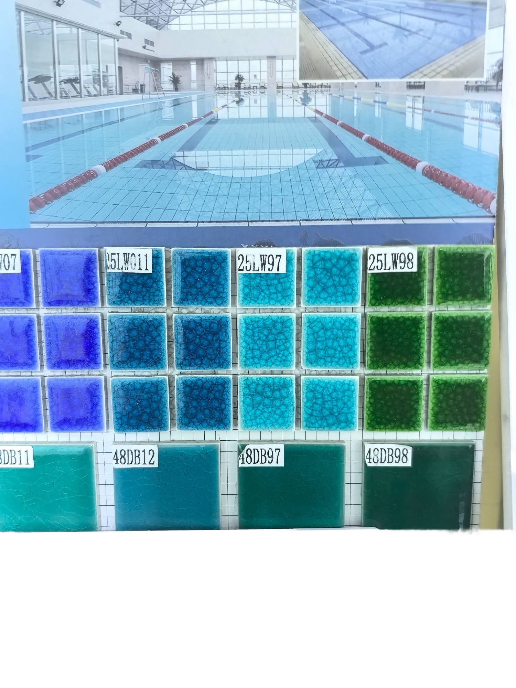
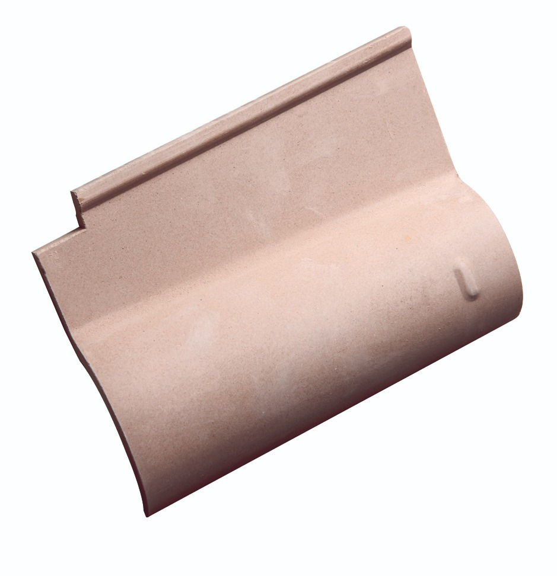
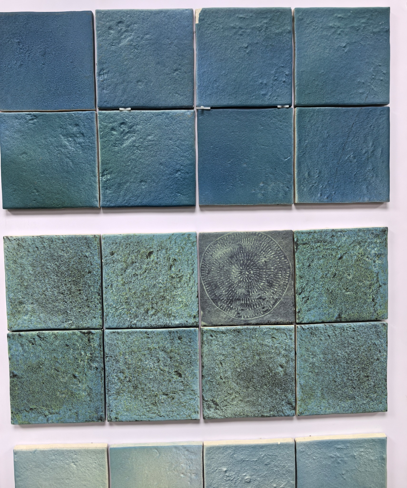
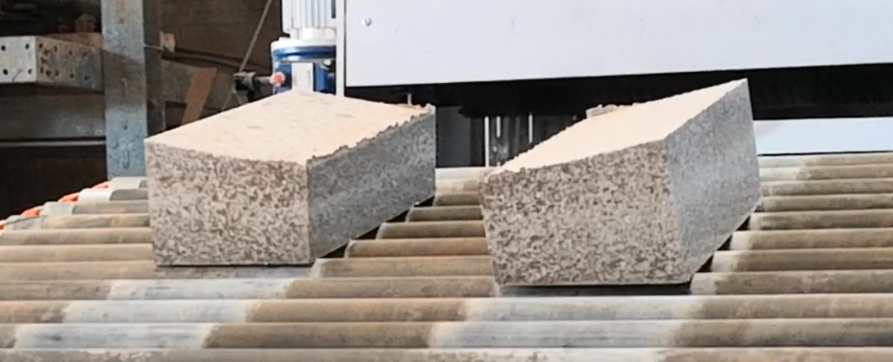
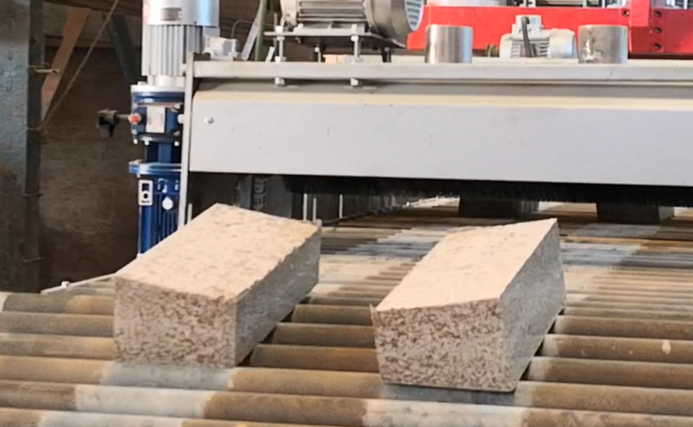
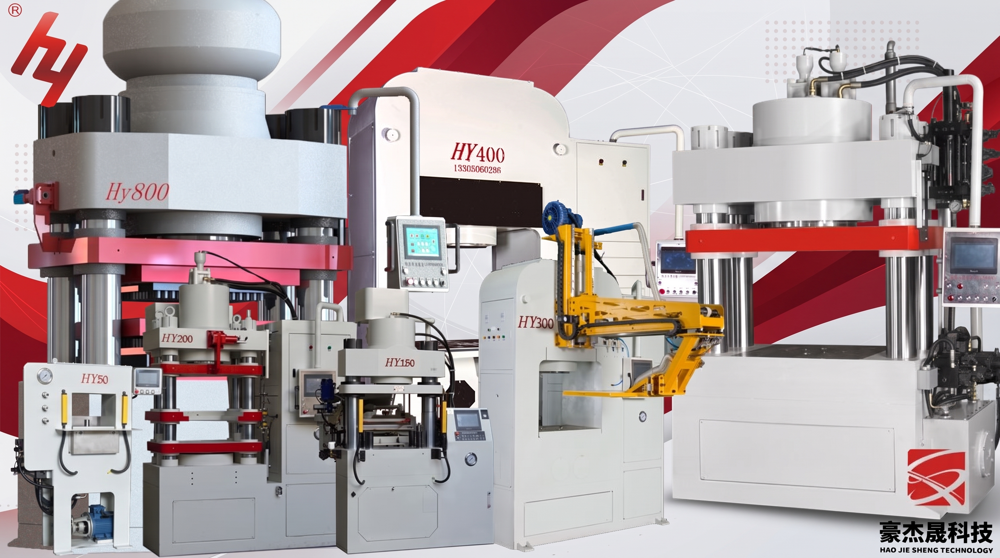

SPECIAL SHAPES
Special-Shaped Ceramic Tiles
Forming solutions for shaped, raised and dimensional ceramic products.
Explore product categories that can be made with hydraulic pressing and forming solutions. The photos below show application examples; the equipment configuration is selected according to the material, product shape, size and output target.
Mosaics, decorative wall tiles, swimming pool tiles, roof tiles, trim pieces and special-shaped ceramic products.
Forming solutions for shaped, raised and dimensional ceramic products.

Examples include geometric, glossy and textured mosaic surfaces.

Pool tiles, inner and outer corner tiles and other specialty profiles.

Decorative roof tile shapes and profiles for building applications.

Long, narrow and curved trim pieces in multiple colors and finishes.

Decorative surfaces with distinct textures, relief and visual effects.

Hydraulic powder pressing can be evaluated for alumina, zirconia, electronic ceramics, insulating components and other technical ceramic parts. Final tonnage and tooling depend on the part geometry, material behavior and density requirements.
Dry pressing is an alternative process worth evaluating for selected ceramic cookware products traditionally made by other forming methods.

A dry-pressing solution can be assessed for productivity, tooling and surface quality.

Forming feasibility depends on product dimensions, thickness and material properties.

Pressing equipment and coaster blanks may be discussed according to your production needs.
Applications may include refractory bricks, cement products and other powder-based building materials. Press capacity is selected after reviewing product size and production targets.

Powder pressing equipment can be evaluated for different refractory shapes and sizes.

Custom tooling and press configuration depend on the part and process.

Send drawings or samples to discuss a suitable forming solution.

Heroseong manufactures 50T–800T hydraulic presses for powder pressing and selected forming applications. Potential projects include powder-metallurgy components, metal parts, tube forming and customized processes. Suitability is confirmed case by case.
Send product photos, drawings, material details or sample requirements. We can discuss the suitable press range and forming process.
Contact Ben · Email →